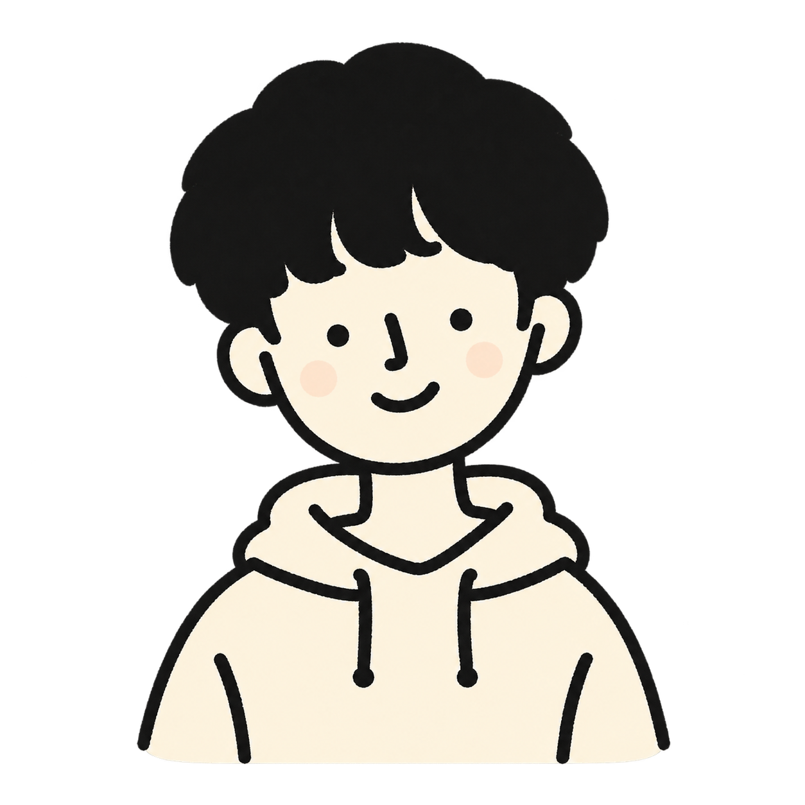

武井克樹のポートフォリオ
長野の自然をイメージした、自分のことや好きなことを紹介するサイト。HTML・CSS・JavaScript を使い、山並みの背景や光のアニメーションを取り入れています。
トップを見る ↑KATSUKI'S PORTFOLIO
ROOTED IN NAGANO
長野の豊かな自然を、心の原風景に。
好きなことも、ものづくりも、自分のペースで。
長野出身。好きなことを、自分らしく。
山や緑に囲まれた長野が、私のふるさとです。
好きなことは、ゲーム、睡眠、音楽、バドミントン、水泳。以前はバドミントン部に所属していました。ここには、そんな私のことや制作したもの、日々学んだことをまとめていきます。
GitHub を見る ↗金沢工業大学
工学部 情報工学科
部活動の経験 バドミントン部に所属
長野の自然をイメージした、自分のことや好きなことを紹介するサイト。HTML・CSS・JavaScript を使い、山並みの背景や光のアニメーションを取り入れています。
トップを見る ↑スキル欄のサンプルです。経験に合わせて編集できます。
HTML / CSS / JavaScript
UI Design / Responsive Design
Git / GitHub / VS Code